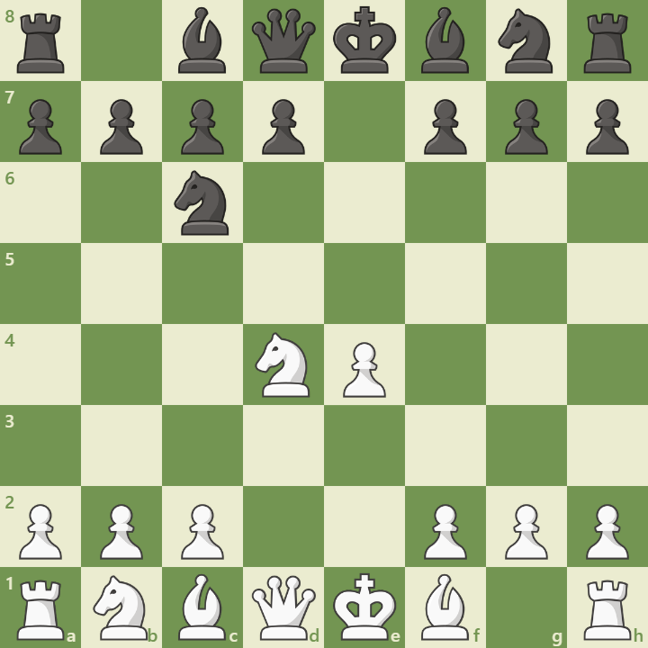

Overview
The Scotch Game is a classical chess opening that begins with the moves:
1. e4 e5 2. Nf3 Nc6 3. d4
This opening challenges Black’s center early and leads to open, tactical positions. It was popularized in the 19th century and remains a favorite among aggressive players.
Opening Diagram
This position arises after 1.e4 e5 2.Nf3 Nc6 3.d4 exd4 4.Nxd4. White gains central control and opens lines for rapid development.
Main Variations
- Main Line: 4.Nxd4 – Solid and straightforward continuation.
- Scotch Gambit: 4.Bc4 – Sacrifices a pawn for quick development.
- Göring Gambit: 4.c3 – A double-pawn gambit aiming for central dominance.
Strategic Themes
The Scotch Game emphasizes:
- Immediate central tension and space advantage
- Open lines for tactical play
- Simplified theory compared to the Ruy Lopez
- Flexible pawn structures and piece activity